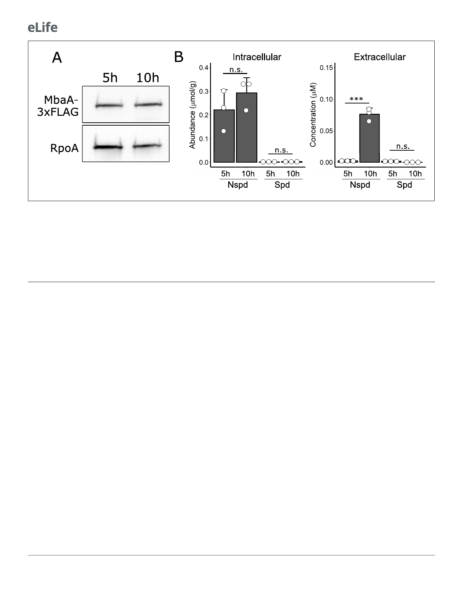

Research article
Microbiology and Infectious Disease
Figure 6. MbaA and intracellular polyamine levels remain constant throughout the biofilm lifecycle. (A) Top panel: western blot showing MbaA-3xFLAG
levels at 5 hr and 10 hr post inoculation. Bottom panel: the RpoA loading control. Data are representative of three biological replicates. (B)
Measurements of intracellular (left panel) and extracellular (right panel) norspermidine (Nspd) and spermidine (Spd) levels at 5 hr and 10 hr post
inoculation. Intracellular levels were normalized to wet cell pellet mass. N = 3 biological replicates, error bars represent SDs, and unpaired t-tests were
performed for statistical analysis. n.s.: not significant; ***p<0.001.
The online version of this article includes the following figure supplement(s) for figure 6:
Figure supplement 1. Polyamine levels in WT V. cholerae prior to and following biofilm dispersal.
Discussion
In this study, we investigated the effects of the polyamines norspermidine and spermidine on V.
cholerae biofilm dispersal. Norspermidine and spermidine, which differ in structure only by one
methylene group, mediate starkly opposing effects on the V. cholerae biofilm lifecycle: norspermi-
dine inhibits and spermidine promotes biofilm dispersal. Both function through the NspS-MbaA cir-
cuit. Thus, the polyamine binding protein NspS must harbor the exquisite capability to assess the
presence or absence of a single chemical moiety as norspermidine binding drives NspS interaction
with MbaA, whereas binding to spermidine prevents this interaction. Here, we speculate on the pos-
sible biological significance of our findings. We suspect that norspermidine and spermidine act as
‘self’ and ‘other’ cues, respectively. Specifically, norspermidine is a rare polyamine in the biosphere,
produced only by select organisms, namely V. cholerae and closely related marine vibrios
(Hamana, 1997; Michael, 2018; Yamamoto et al., 1991). The observation that laboratory-grown
WT V. cholerae releases little norspermidine, at least in part due to PotD1-mediated reuptake
(Figure 5C), suggests that this system does not behave like a canonical quorum-sensing pathway.
However, it is possible that norspermidine is secreted by V. cholerae under some environmental con-
ditions, or by other vibrios, and V. cholerae detects the released norspermidine via NspS-MbaA, and
its dispersal from biofilms is prevented. Thus, when close relatives are nearby, as judged by detec-
tion of the presence of norspermidine, V. cholerae elects to remain in its current biofilm niche. More
speculative is the notion that norspermidine functions as a cue for phage-, predator-, or toxin-
induced cell lysis. Specifically, if V. cholerae can detect norspermidine released by neighboring lysed
V. cholerae cells, in response to the perceived danger, V. cholerae would remain in the protective
biofilm state. Conversely, detection of spermidine, a nearly ubiquitously produced polyamine
(Michael, 2018), could alert V. cholerae to the presence of competing or unrelated organisms. In
this case, V. cholerae would respond by dispersing from biofilms and fleeing that locale. In a seem-
ingly parallel scenario, we previously discovered that autoinducer AI-2, a universally produced quo-
rum-sensing signal, also drove V. cholerae biofilm repression and premature dispersal, while CAI-1,
the V. cholerae ‘kin’ quorum-sensing autoinducer, did not (Bridges and Bassler, 2019). Together,
13 of 20